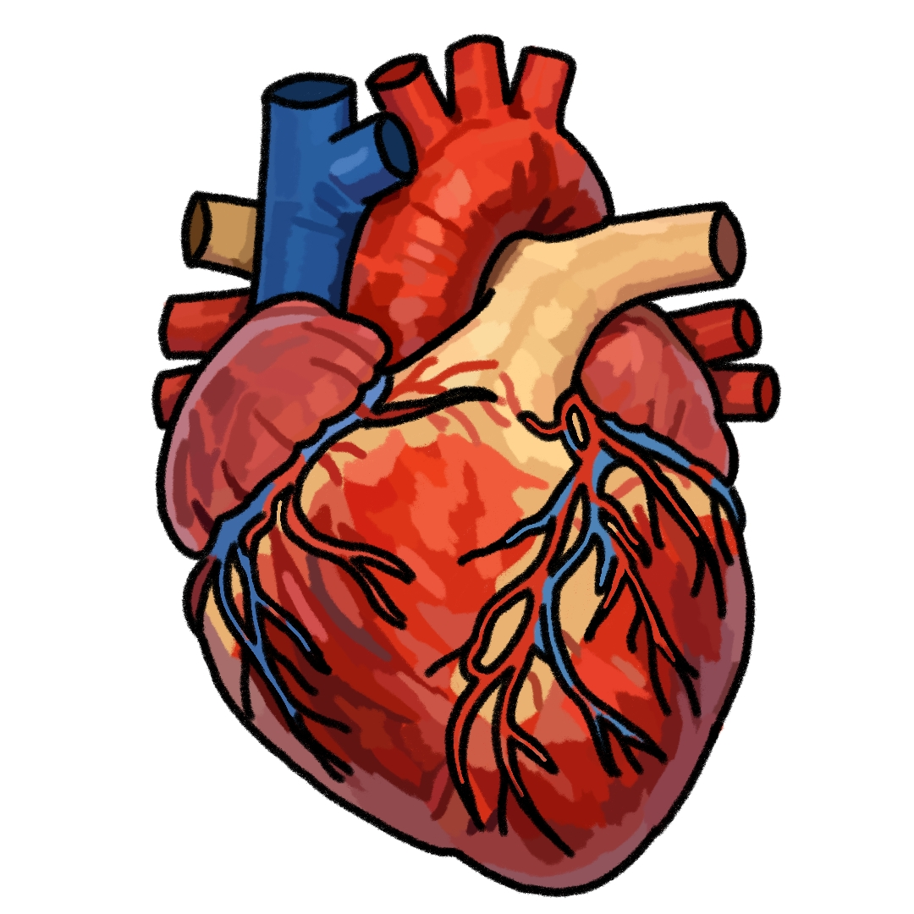
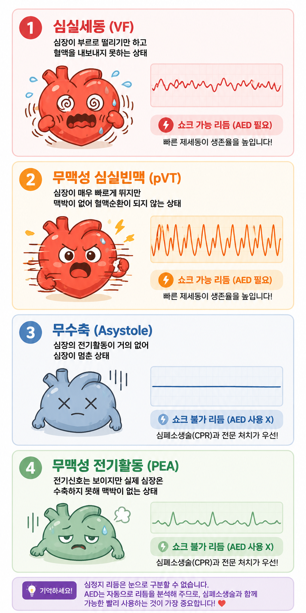

나이, 혈압, 운동 여부 등 건강 정보를 입력합니다.
입력된 정보를 기반으로 심장질환 위험도를 계산합니다.
위험 요인과 함께 생활습관 개선 방법을 제공합니다.
명의 사용자가 검사를 완료했습니다.
하루 30분 걷기는 심혈관 건강에 도움이 됩니다.
아래 버튼을 눌러 대표적인 심정지 리듬과 자동심장충격기(AED) 및 심폐소생술의 중요성을 확인하세요.

심정지 환자를 발견하면 가장 먼저 119에 신고한 후 즉시 가슴압박을 시작해야 합니다. AED가 도착하면 음성 안내에 따라 가능한 빠르게 사용해야 하며, 특히 심실세동(VF)과 무맥성 심실빈맥(pVT)은 전기충격으로 회복될 가능성이 있는 리듬입니다. 따라서 심폐소생술과 AED를 함께 시행하는 것이 생존율을 높이는 가장 중요한 방법입니다.
출처 : 강남구보건소